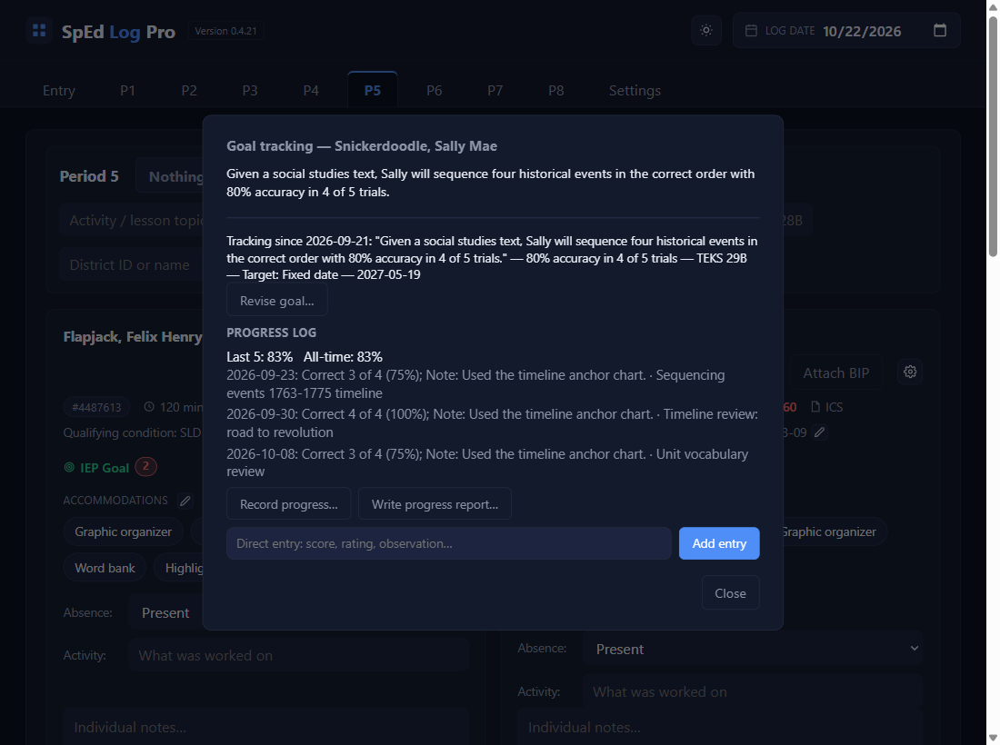
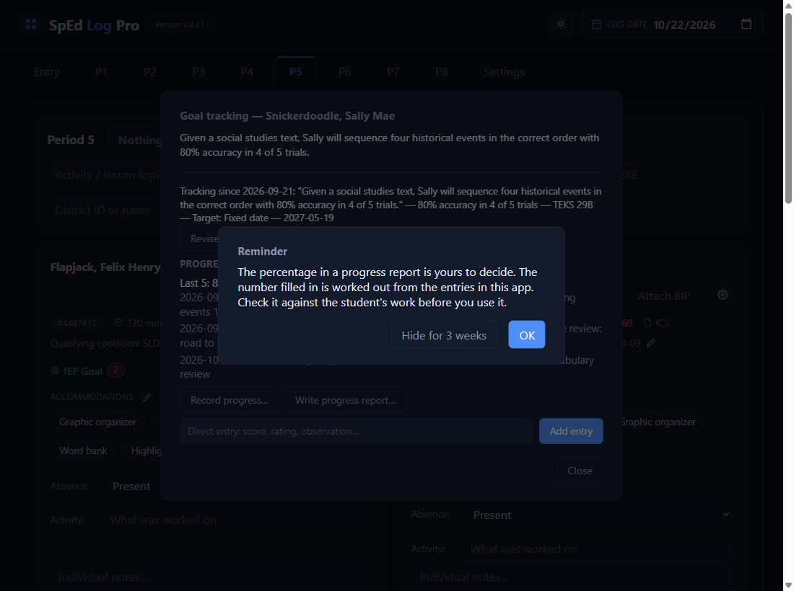
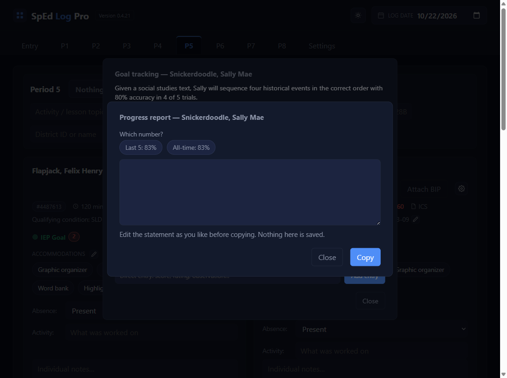
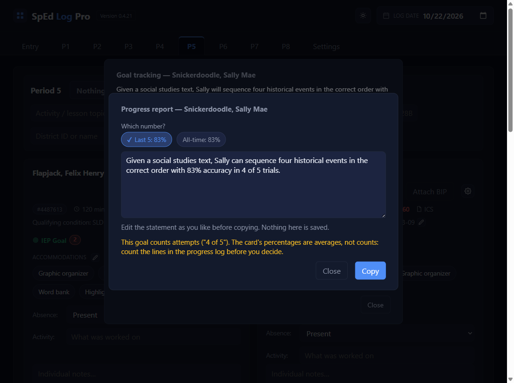
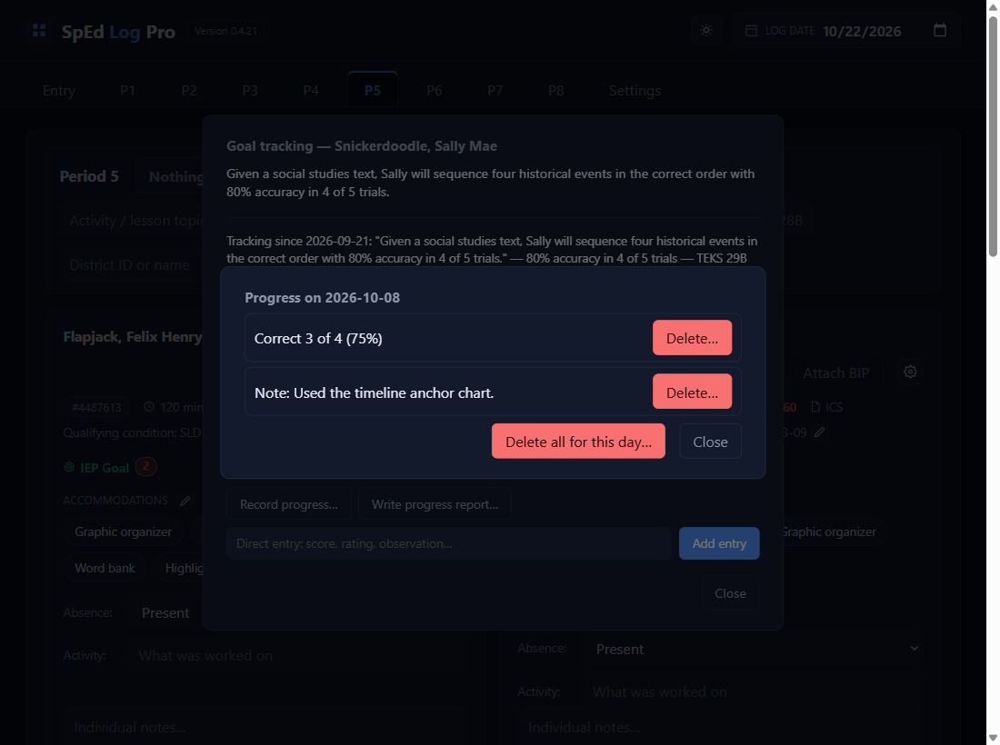
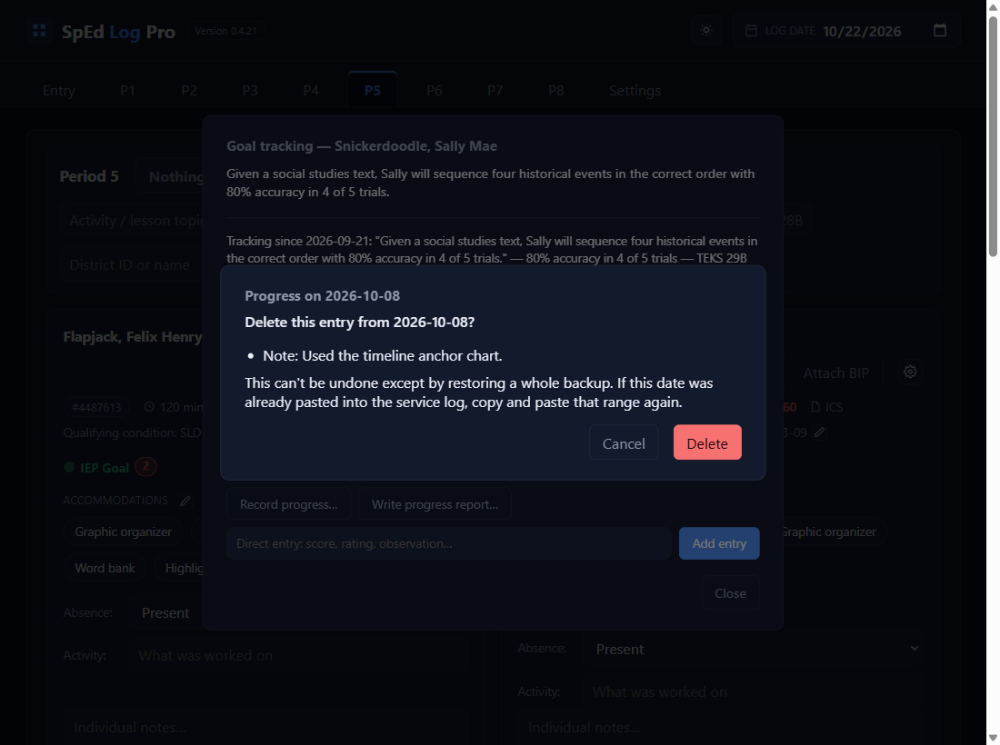
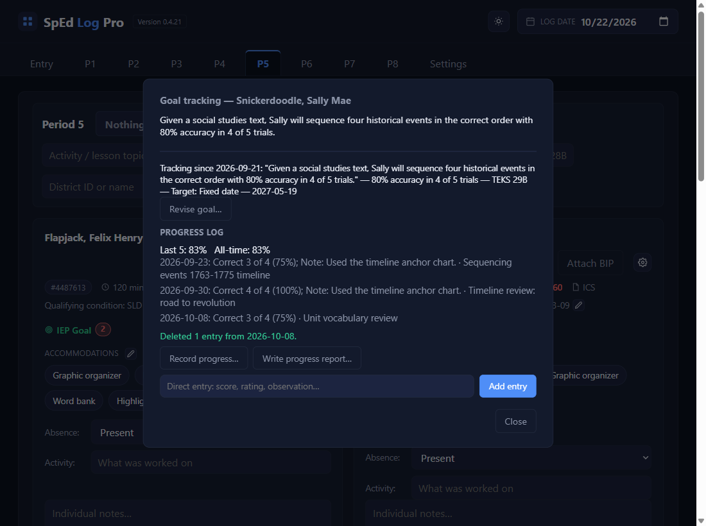

Goal progress: record, report, fix
Record progress
Click the number next to IEP Goal
That number is how many alerts are waiting. Here, saving the Bees in the City reading (TEKS 28B) raised one for Waffles, on top of two older ones.

Pick the alert you have evidence for
Open alerts lists every open alert for the student, oldest first: the date, the TEKS that matched, and that day's activity. Click the one you want. To clear a backlog in one sitting, click Work through all (oldest first) instead.

Read the Goal check and the Look for
Under the goal, Goal check says how you planned to check this goal in class (you type it when you set up the goal). If the day's activity came from a lesson file with a Look for column, the black box with yellow text, LOOK FOR, says where that TEKS shows up in the activity and what to count. A typed activity shows no Look for.

Fill in what happened
The pop-up shows the goal's own methods. Tick each Checklist item the student met (it counts as you go), or type Correct _ of _ on a trial-fraction goal. A goal has one or the other, never both. Pick a Rubric level if the goal has one, and add a Note if you like.
Until you tick something the line reads Nothing ticked (not saved). If the student tried and showed none of the items, tick None of these yet, the last row: that records a real 0%.

Save, Save score later, Dismiss, or Close
Save records it, dated to the lesson's day, and takes you back to the list (it closes once no alerts are left). Dismiss if it doesn't apply (absent, modified work): nothing is recorded. Close leaves it waiting.
Save, score later is for work you'll score after class: it saves the rubric pick and the note now and leaves the alert open. The list then reads Waiting for score; open it again when the work comes back and fill in the score. Under Work through all, Skip goes on to the next alert without saving.

See it in the progress log
Open IEP Goal: each day is one line with everything recorded that day, then the activity, for example Checklist 2 of 3 (67%); Rubric: With verbal prompt; Note: …. A trial reads Correct 7 of 10 (70%). Hover over a line to see which items were ticked. Last 5 and All-time sit on top.
No alert for the day you want? Record progress… opens the same pop-up for any tracked goal, dated to the Log date. If that date already has an open alert, it opens that alert instead. Next to it, Write progress report… drafts a report sentence: see Part 2. Recorded something by mistake? See Part 3.

A new goal starts a new count
A new count starts only when you tick This is a new goal (start a new count) at the bottom of Revise goal… (a new IEP, say). The log then shows New goal from … where it starts, greys the old goal's entries, and the percentages count only the new goal: All-time reads Since …. Leave the box unticked for a fix or an update, even one that changes the wording (a typo, new TEKS, a corrected mastery note): the count carries on. A Goal Setup file with new goal wording ticks the box for you; untick it if the file only corrects the wording.
Write a progress report
Open IEP Goal, then Write progress report…
On the student's card, click IEP Goal. The button sits beside Record progress…, under the progress log.

Read the reminder, then OK
The percentage in a progress report is yours to decide, so check the number against the student's work. OK goes on. Hide for 3 weeks goes on too, and keeps the reminder away for every student until the 21st day after you click it.

Which number? Pick one
Last 5 or All-time (it reads Since … after a new goal). They're the same numbers Goal tracking shows. With no checklist or trial-fraction entries yet, the box fills straight away with __% for you to type the number into.

Check the draft, edit it, then Copy
The box gets the goal's wording, changed three ways: an opening like By the end of the year,, By May 2027,, or In 36 instructional weeks, comes off; every "will" becomes "can"; and the first percentage becomes the number you picked (here 80% became 83%). Edit it however you like, click Copy, and paste it into the report.
Yellow notes under the box say what to check, and never stop you: the goal counts attempts ("4 of 5"), so count the progress log lines yourself; the goal has more than one percentage (only the first changed); it has no percentage; or it has no "will" to change.

Fix or delete recorded progress
Open IEP Goal and click the day's line
In the progress log, click the line for the day you want to fix.

Pick what to delete
Progress on … lists each entry from that day with its own red Delete…. To clear the whole day, click Delete all for this day…. Close changes nothing.

Check it, then Delete
The question names exactly what will go. Delete removes it; Cancel goes back.

Read the green line, and copy the log again
Under the progress log, a green line says what went, and the percentages update. If that day had come from an alert and you deleted its last entry, the alert opens again so you can record it properly. If the day was already pasted into the service log, copy that range again and paste over it (see Paste a week into the log).

✓ You'll know it worked
- The alert is gone from the list, and the number went down.
- One new line for that day in the progress log, and the percentages updated.
- An alert saved for later reads
Waiting for score. - The box reads like the goal, with "can" for "will" and your number in it.
- Paste it in the report, and it's what you copied.
Deleted 1 entry from 2026-10-08.under the log.- That day's line is shorter, or gone.
✕ Avoid these
- Saving an empty checklist to mean 0%. Nothing ticked saves nothing. Tick None of these yet for a real 0%.
- Dismiss when you meant Close. Dismiss records nothing and closes the alert for good.
- Taking the number on trust. It's worked out from what you recorded. Check it against the work.
- Expecting it to be kept. Nothing here is saved. Copy it before you close.
- Deleting to change one number. That's fine, but record it again straight away, dated to the same day (set the Log date first).
- Forgetting the real log. Column F still has the old text until you copy and paste that range again.
⚠ If you see this
Fill in at least one method, or tick None of these yet.Tick an item, type a score, pick a level, or write a note first.
Fill in at least one method before saving.The same, on a goal with no checklist.
This goal counts attempts ("4 of 5").The card's percentages are averages, not counts. Count the lines in the progress log before you decide.
Replace your changes with a fresh statement?You typed in the box, then picked a number. Keep my changes keeps your typing; Replace starts the draft again.
The alert for … is open again.You deleted the last entry from an alert's day. Record it from the alert, or Dismiss it.
This can't be undone except by restoring a whole backup.Check what's named before you click Delete.